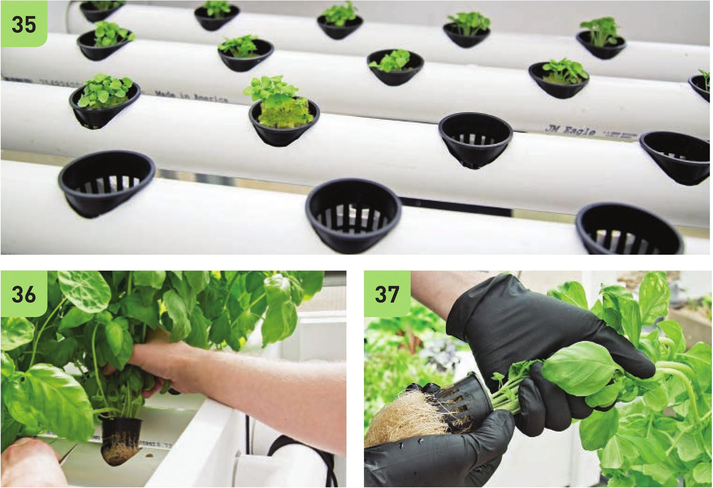

Planting and Harvesting 35 Seedlings should have roots visibly emerging from the bottom of the plug before being transplanted into an NFT channel. 36 Some crops, like basil and other herbs, can be harvested multiple times. This is great and generally not a problem, but sometimes the roots of these plants can grow so massive that they will start to restrict the flow within the channels. 37 Many NFT gardeners like to harvest living plants. The whole plant with roots attached can be stored indoors in a cup of water and the leaves are pulled off as needed. This is a great way to share your harvest with friends while keeping the produce fresh. 38 Net pots can be reused. Remove roots to be composted and save the pots. The pots can washed, rinsed, and reused. Troubleshooting Clogged channel • Check to see if roots are clogging channel. Flarvest crops if needed to open up channel. • Check to see if an expanded clay pellet or other substrate is clogging drainage line. Clogged irrigation lines • If using ball valves (shutoff valves), close off flow to all VC irrigation lines except the clogged line. If pressure does not remove clog, unfold a paper clip and push it down irrigation line to loosen any debris clogging line. If line is still clogged, replace the line with new W tube. If line is still clogged, replace the W double barbed connector. 82 DIY HYDROPONIC GARDENS
